Complex multivariate datasets ko categorical factors ke hisaab se clean row-and-column subplots me partition karna: sns.FacetGrid, map_dataframe(), relplot(), displot(), aur catplot() ki comprehensive practical guide natural Hinglish me.
Suppose tumhare paas ek college ke 120 students ka data hai. Data me 4 alag-alag departments hain: Computer Science (CS), Engineering, Business, aur Arts. Sath hi har student ek study group (Group A, Group B, Group C) me partitioned hai. Agar tum ek hi single scatter plot par sabhi 12 groups ko alag-alag colors aur markers se draw karne ki koshish karoge, toh kya hoga?
Woh graph ek unreadable dense "ink blob" ban jayega! Har group ke dots ek dusre ke upar overlap ho jayenge, aur yeh pehchanna impossible ho jayega ki CS students ka study pattern Arts students se kitna alag hai. Is visual overcrowding ko solve karne ke liye data science me Multi-Plot Analysis (ya Trellis / Lattice Graphics) use kiya jata hai.
Faceting ka matlab hota hai ek bade complex dataset ko categorical variable ke values ke aadhar par chote-chote subsets me split karna, aur har subset ke liye ek separate mini-graph (subplot) create karna, sabhi ko ek structured row-and-column grid canvas par align karke.
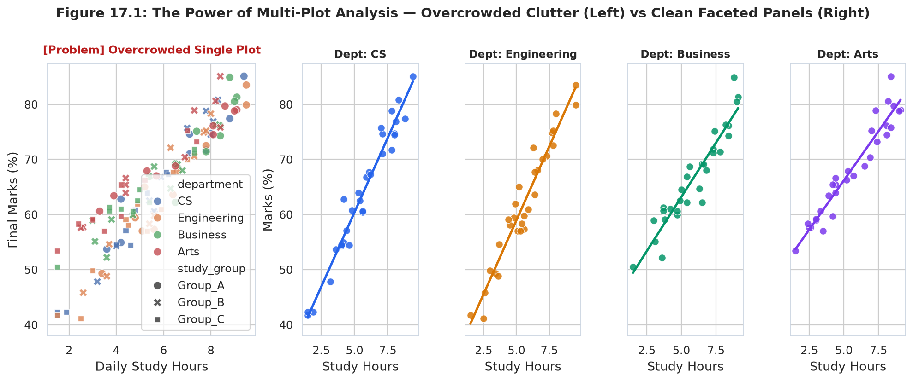
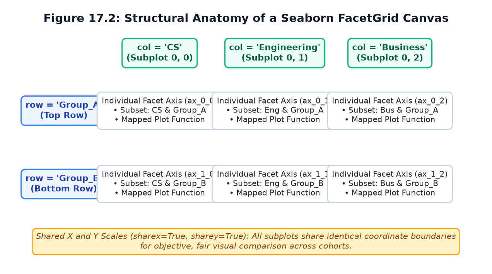
row="study_group") and columns (e.g. col="department") with synchronized axes coordinates.Demonstrating how a single function call partitions a dataset into separate department panels:
import seaborn as sns
import matplotlib.pyplot as plt
import pandas as pd
# Load verified student performance dataset
df_student = pd.read_csv("scratch/seaborn_topic17_data/student_academic_dataset.csv")
# 1. Initialize FacetGrid partitioned by department
g = sns.FacetGrid(df_student, col="department", height=3.5, aspect=1.0)
# 2. Map scatter plot onto each facet
g.map_dataframe(sns.scatterplot, x="study_hours", y="marks", color="#0F766E", s=50)
# 3. Add clean axis labels and title
g.set_axis_labels("Study Hours", "Marks (%)")
plt.show()Partitioning students vertically across rows using row="study_group":
import seaborn as sns
import matplotlib.pyplot as plt
import pandas as pd
df_student = pd.read_csv("scratch/seaborn_topic17_data/student_academic_dataset.csv")
# Vertical stack by study group
g = sns.FacetGrid(df_student, row="study_group", height=2.4, aspect=3.0)
g.map_dataframe(sns.scatterplot, x="study_hours", y="marks", color="#D97706", s=45)
g.set_axis_labels("Daily Study Hours", "Final Exam Marks (%)")
plt.show()Seaborn me FacetGrid ek figure-level object-oriented class hai jo multi-panel visualizations ki foundation banati hai. Yeh do-step execution pattern follow karti hai:
g = sns.FacetGrid(data, col="...", row="...") call karke figure aur subplots structure initialize hota hai (empty canvas).g.map() ya g.map_dataframe() use karke plotting function ko har subplot cell par execute kiya jata hai.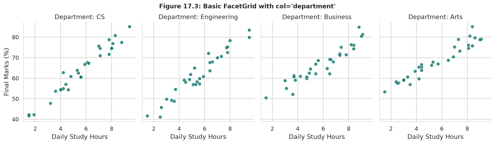
col="department" — 4 subplots aligned side-by-side, sharing a uniform Y-axis range (40% to 100%).| Parameter | Type / Default | Description & Behavioral Function |
|---|---|---|
data |
pandas.DataFrame | Tidy (long-form) DataFrame jisme categorical columns aur numerical measurements hon. |
col |
str (column name) | Categorical variable jo horizontal columns of subplots define karta hai. |
row |
str (column name) | Categorical variable jo vertical rows of subplots define karta hai. |
hue |
str (column name) | Categorical variable jo har facet ke andar points ko color-code karta hai. |
col_wrap |
int (Default: None) | Columns ki maximum limit. Agar categories zyada hon (e.g. 8), toh yeh unhe multiple rows me wrap kar deta hai (cannot be used with row). |
height |
float (Default: 3.0) | Har individual subplot ki height in inches. |
aspect |
float (Default: 1.0) | Aspect ratio (width = height × aspect). aspect=1.5 makes facets wider. |
sharex, sharey |
bool (Default: True) | Whether all subplots share the same X and Y axis limits and tick marks. |
margin_titles |
bool (Default: False) | When True and using both row and col, places row titles on the right margin instead of repeating on each panel. |
By default, FacetGrid me sharex=True aur sharey=True hota hai. Yeh ek scientific best practice hai. Agar subplots different scales use karenge, toh reader visually deceive ho sakta hai:
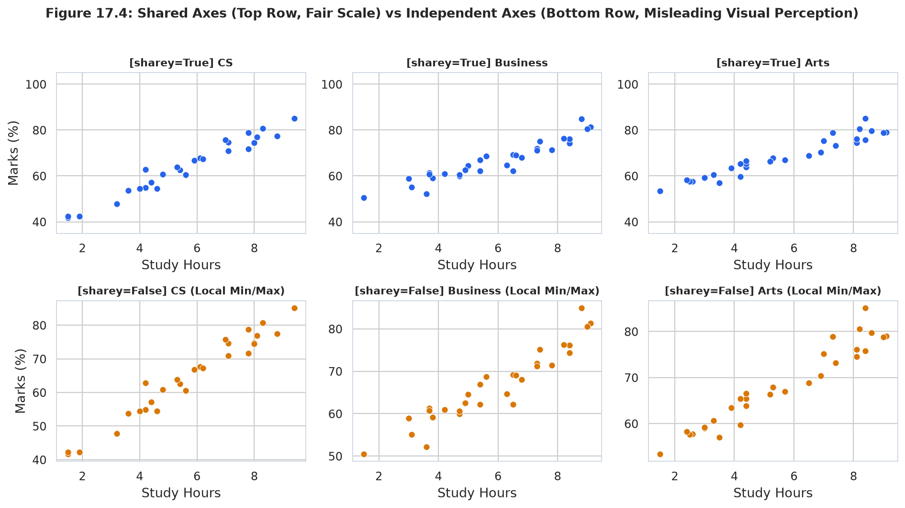
sharey=True reveals true absolute differences across departments. [Bottom Row] sharey=False stretches local coordinates, making low-performing cohorts appear artificially inflated!Agar alag-alag facets me completely different scale ke measurements plot kiye ja rahe hon (e.g. ek facet me Server Requests 0-5000 aur dusre me Error Rate 0-10), tab sharey=False zaroori hota hai. Lekin jab same metric compare ho rahi ho, hamesha sharey=True rakhein!
import seaborn as sns
import matplotlib.pyplot as plt
import pandas as pd
df_student = pd.read_csv("scratch/seaborn_topic17_data/student_academic_dataset.csv")
# Wide landscape facets (height=3.2, aspect=1.4)
g = sns.FacetGrid(df_student, col="department", height=3.2, aspect=1.4)
g.map_dataframe(sns.scatterplot, x="study_hours", y="marks", color="#2563EB", s=50)
g.set_axis_labels("Hours Studied", "Exam Score")
plt.show()import seaborn as sns
import matplotlib.pyplot as plt
import pandas as pd
df_student = pd.read_csv("scratch/seaborn_topic17_data/student_academic_dataset.csv")
# Wrap 4 departments into a 2x2 grid
g = sns.FacetGrid(df_student, col="department", col_wrap=2, height=3.0, aspect=1.2)
g.map_dataframe(sns.scatterplot, x="study_hours", y="marks", color="#059669")
g.set_axis_labels("Study Hours", "Marks (%)")
plt.show()FacetGrid create karne ke baad, magic function mapping ke through hota hai. Seaborn do primary mapping methods provide karta hai: g.map() aur g.map_dataframe().
| Method | Arguments Pattern | How It Operates | Recommended Use Case |
|---|---|---|---|
g.map(func, *args, **kwargs) |
g.map(plt.hist, "marks", bins=10) |
Positional column arrays pass karta hai function ko. Useful for classic Matplotlib functions. | Simple univariate histograms (plt.hist), scatter plots (plt.scatter). |
g.map_dataframe(func, *args, **kwargs) |
g.map_dataframe(sns.scatterplot, x="hours", y="marks") |
Passes the subsetted DataFrame directly as keyword arguments. Preserves column names and metadata. | Modern Seaborn functions (sns.scatterplot, sns.regplot, sns.kdeplot). |
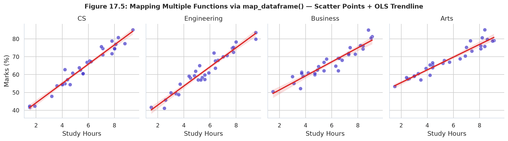
map_dataframe() — First mapping sns.scatterplot (dots) and then mapping sns.regplot (trendline) onto the identical FacetGrid canvas!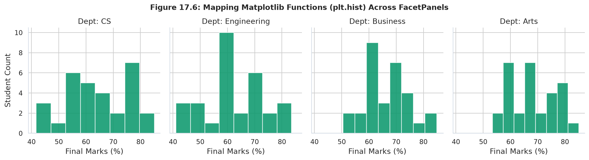
plt.hist using g.map() — Demonstrates how native Matplotlib plotting calls integrate seamlessly with FacetGrid.import seaborn as sns
import matplotlib.pyplot as plt
import pandas as pd
df = pd.read_csv("scratch/seaborn_topic17_data/student_academic_dataset.csv")
# Initialize grid
g = sns.FacetGrid(df, col="department", height=3.5, aspect=1.0)
# Layer 1: Scatter plot dots
g.map_dataframe(sns.scatterplot, x="study_hours", y="marks", color="#4338CA", s=50, alpha=0.7)
# Layer 2: Regression trendline (without points)
g.map_dataframe(sns.regplot, x="study_hours", y="marks", scatter=False, color="#DC2626")
g.set_axis_labels("Study Hours", "Marks (%)")
plt.show()import seaborn as sns
import matplotlib.pyplot as plt
import pandas as pd
df = pd.read_csv("scratch/seaborn_topic17_data/student_academic_dataset.csv")
g = sns.FacetGrid(df, col="department", height=3.4, aspect=1.0)
# Use g.map() with column name as positional string
g.map(plt.hist, "marks", bins=8, color="#059669", edgecolor="white")
g.set_axis_labels("Final Marks (%)", "Count")
plt.show()row, col, and hue
Jab hum real-world complex datasets analyze karte hain, toh data me multiple categorical attributes hote hain. For example, humare student dataset me department (4 categories), study_group (3 categories), aur attendance_rate jaise factors hain.
Seaborn ka FacetGrid humein 3 distinct visual dimensions deta hai jinhe combine karke hum ek hi visualization me 4 ya 5 variables simultaneously explore kar sakte hain:
| Dimension Parameter | Spatial / Visual Mapping | Cognitive Purpose | Ideal Number of Categories |
|---|---|---|---|
col="column_name" |
Horizontal Panels (Left to Right) | Primary category comparison along a shared horizontal axis. | 2 to 5 categories (e.g., 4 Departments). |
row="column_name" |
Vertical Panels (Top to Bottom) | Secondary category split creating stacked visual baselines. | 2 to 4 categories (e.g., 3 Study Groups). |
hue="column_name" |
Color Palette within each panel | Sub-segmentation inside the same Cartesian axes. | 2 to 4 high-contrast classes (e.g., Attendance High/Low). |
style="column_name" |
Marker shapes or dash styles | Additional visual encoding accessible for grayscale or colorblind viewers. | 2 to 3 distinct glyphs. |
col)Column faceting data ko side-by-side split karta hai. Har category ka apna x-axis aur y-axis panel hota hai, jisse horizontal comparison effortless ho jati hai:
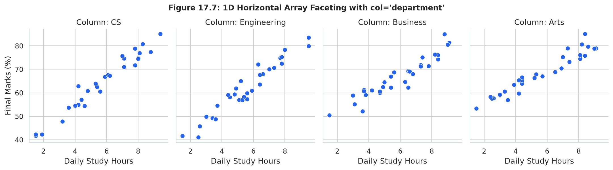
Figure 17.7 me notice karein ki sabhi four departments me study hours aur marks ka correlation exceptionally strong hai: CS (r = 0.9774), Engineering (r = 0.9670), Arts (r = 0.9614), aur Business (r = 0.9435). Agar humne single axes par 120 points scatter kiye hote, toh 4 overlapping colors dekhkar slope ka exact angle distinguish karna impossible hota!
row)Jab categories me hierarchical order ho ya time-based sequence ho (jaise Year 2024, 2025, 2026 ya Study Group A, B, C), vertical row stacking sabse natural visual flow deti hai:
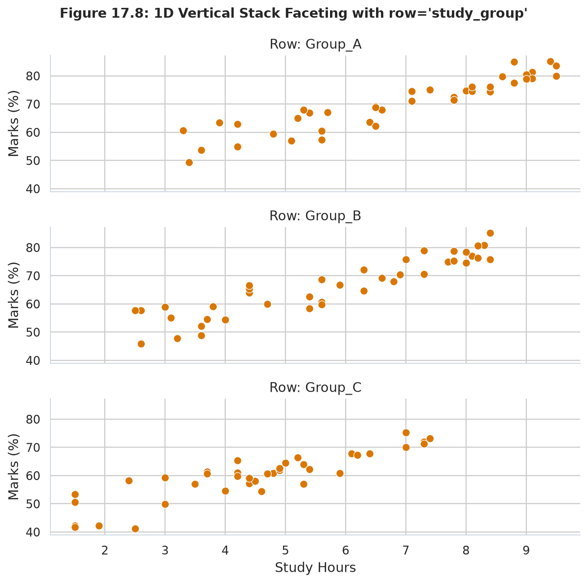
row and col
Jab hum row aur col dono pass karte hain, toh Seaborn ek 2D Cartesian Subplot Matrix generate karta hai.
Agar humare paas 3 Rows aur 4 Columns hain, toh exactly 3 × 4 = 12 subplots create honge:
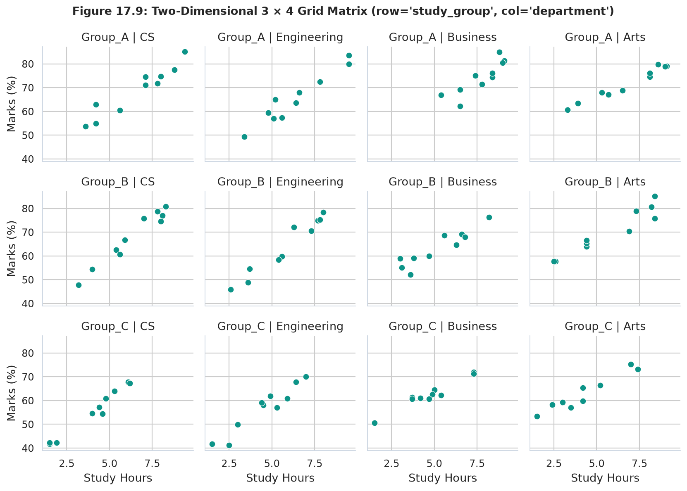
hue within Panels
Subplot panels ke andar further distinction lane ke liye hum hue parameter use karte hain. Yeh har individual panel ke data points ko unke categorical class ke hisab se colorize kar deta hai:
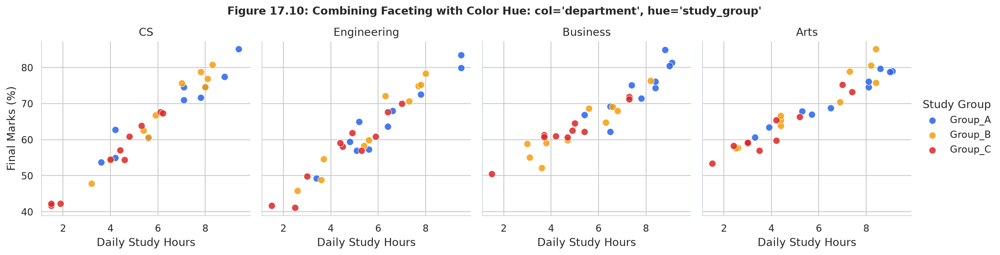
hue="study_group" showing distinct color coding and custom legend.row, col, and hueimport seaborn as sns
import matplotlib.pyplot as plt
import pandas as pd
# 1. Load academic telemetry dataset
df = pd.read_csv("scratch/seaborn_topic17_data/student_academic_dataset.csv")
# 2. Instantiate 2D Grid: Rows = study_group (3), Cols = department (4)
g = sns.FacetGrid(
df,
row="study_group",
col="department",
margin_titles=True,
height=2.8,
aspect=1.1
)
# 3. Map scatterplot to each of the 12 cells
g.map_dataframe(
sns.scatterplot,
x="study_hours",
y="marks",
alpha=0.85,
s=50,
color="#2563EB"
)
# 4. Standardize axis labels and titles
g.set_axis_labels("Study Hours / Day", "Marks (%)")
g.fig.subplots_adjust(top=0.92)
g.fig.suptitle("Student Performance 2D Matrix (3 Groups x 4 Departments)", fontsize=14, fontweight="bold")
plt.show()import seaborn as sns
import matplotlib.pyplot as plt
import pandas as pd
# Load server telemetry
api_df = pd.read_csv("scratch/seaborn_topic17_data/api_telemetry_dataset.csv")
# Create FacetGrid with col=endpoint and hue=traffic_level
g = sns.FacetGrid(
api_df,
col="endpoint",
hue="traffic_level",
palette={"Low": "#10B981", "Normal": "#3B82F6", "Peak": "#EF4444"},
height=3.5,
aspect=1.0
)
g.map_dataframe(sns.scatterplot, x="cpu_utilization_pct", y="response_latency_ms", alpha=0.8, s=60)
g.add_legend(title="Traffic Level")
g.set_axis_labels("CPU Utilization (%)", "Response Latency (ms)")
plt.show()Default grid settings har dataset ke liye ideal nahi hote. Agar aapke paas 8 categories hain, toh 8 columns ek single horizontal line me squish ho jayenge, jisse text unreadable ho jayega. Is section me hum sikhenge ki subplot geometry, column wrapping, axis scale independence, aur titles ko professionally kaise polish kiya jata hai.
height and aspect
Matplotlib ke standard figsize=(width, height) ke opposite, Seaborn ka FacetGrid sizing ko per-facet basis par calculate karta hai:
height: Har individual subplot ki vertical height in inches (e.g., height=3.5).aspect: Har subplot ka aspect ratio, defined as width / height. So individual facet width = height * aspect.height * aspect * n_columns. Total Figure Height = height * n_rows.sharex and sharey
By default, FacetGrid assumes karta hai ki sabhi subplots me x aur y axes ka scale same hona chahiye (sharex=True, sharey=True). Yeh visual comparison ko fair banata hai kyunki same physical height ka matlab same numerical value hota hai.
Lekin real-world me, kuch categories ke scale me 10x ka difference ho sakta hai (jaise lightweight microservice vs heavy checkout transaction). Aise case me shared axis set karne se choti values flat ho jati hain!
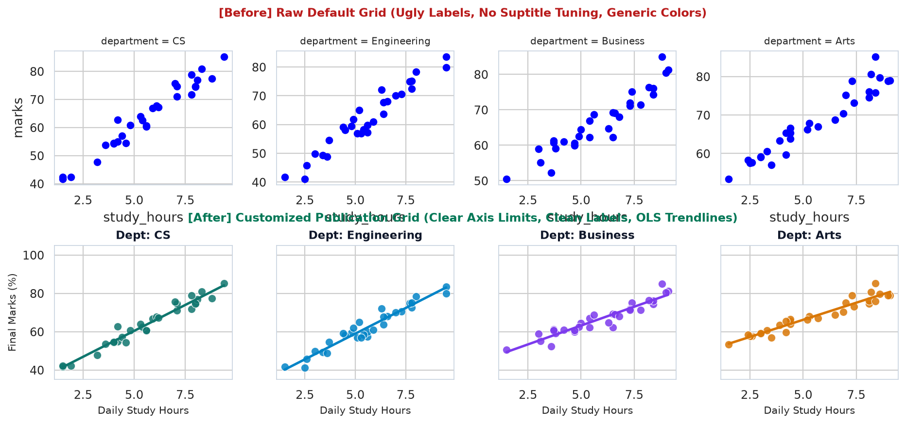
Jab aap sharey=False karte hain, toh har subplot apne data ke [min, max] par zoom-in kar leta hai.
Caution: Isse viewer confuse ho sakta hai agar do plots ki visual line same height par ho lekin left plot par 50 ho aur right plot par 500! Always add clear tick labels jab axes unshared hon.
col_wrap
Jab aapke categorical variable me 5 se zyada unique levels hote hain (e.g., 10 US States, 12 Months of the year), toh horizontal row screen se bahar chali jayegi.
Is situation ko solve karne ke liye Seaborn deta hai col_wrap=K:
| Configuration | Grid Dimensions Output | Key Constraint |
|---|---|---|
col="month", col_wrap=4 |
12 categories → 3 Rows × 4 Columns | col_wrap cannot be combined with row parameter. |
col="region", col_wrap=2 |
4 regions → 2 Rows × 2 Columns (compact square) | Preserves readability on mobile and dashboard layouts. |
Default title format department = CS kafi technical aur robotic lagti hai. Seaborn allows templated string customization via g.set_titles():
g.set_titles(template="Cohort: {col_name}") → Displays "Cohort: CS", "Cohort: Engineering".g.set_titles(row_template="Group: {row_name}", col_template="Dept: {col_name}") → Customizes both row and column headers in 2D grids.g.set_axis_labels("Study Hours", "Final Exam Score") → Sets outer edge labels while suppressing redundant inner axes labels automatically.g.despine(left=True) → Removes top, right, and optionally left spines for modern, clean visual aesthetics.import seaborn as sns
import matplotlib.pyplot as plt
import pandas as pd
df = pd.read_csv("scratch/seaborn_topic17_data/student_academic_dataset.csv")
# Create FacetGrid with tuned height and aspect
g = sns.FacetGrid(
df,
col="department",
col_wrap=2,
height=3.2,
aspect=1.3,
sharey=True
)
g.map_dataframe(
sns.scatterplot,
x="study_hours",
y="marks",
hue="study_group",
palette="Set2",
s=55
)
# Custom title template and standardized axis labels
g.set_titles(template="Department: {col_name}", size=11, weight="bold")
g.set_axis_labels("Daily Study Hours", "Final Score (%)")
g.add_legend(title="Academic Cohort")
g.despine(trim=True)
plt.show()import seaborn as sns
import matplotlib.pyplot as plt
import pandas as pd
api_df = pd.read_csv("scratch/seaborn_topic17_data/api_telemetry_dataset.csv")
# Unshare Y axis to observe local distribution of each endpoint
g = sns.FacetGrid(
api_df,
col="endpoint",
col_wrap=2,
height=3.0,
aspect=1.2,
sharey=False # Crucial: allows auth (0-60ms) and pay (0-400ms) to each scale properly
)
g.map(sns.kdeplot, "response_latency_ms", fill=True, color="#8B5CF6")
g.set_titles(template="Route: {col_name}", size=10, weight="bold")
g.set_axis_labels("Response Latency (ms)", "Probability Density")
plt.show()relplot(), displot(), and catplot()
Beginners aksar puchte hain: "Sir, jab hume FacetGrid initialize karke manually g.map() likhna hi padta hai, toh kya koi aisi function nahi hai jo yeh do-step process ek hi line me kar de?"
Answer is YES! Modern Seaborn (v0.9+) me author Michael Waskom ne figure-level convenience wrappers introduce kiye:
sns.relplot(), sns.displot(), aur sns.catplot().
| Figure-Level Function | Chart Families Supported (kind=...) |
Underlying Engine | Primary Benefit |
|---|---|---|---|
sns.relplot() |
"scatter" (default), "line" |
FacetGrid + scatterplot / lineplot |
Zero boilerplate faceting with automatic legend placement outside the grid. |
sns.displot() |
"hist" (default), "kde", "ecdf" |
FacetGrid + histplot / kdeplot / ecdfplot |
Seamless multi-panel distribution comparisons with shared bins and normalization. |
sns.catplot() |
"strip" (default), "box", "violin", "bar", "point", "count" |
FacetGrid + boxplot / violinplot, etc. |
Categorical aggregation across subplots without manual subset filtering loops. |
sns.relplot() for Relational Multi-Panel Visuals
relplot() relational variables (two continuous metrics) ke relationship ko study karne ke liye best hai.
Isme aap direct col=..., row=..., hue=..., style=..., aur size=... arguments pass kar sakte hain:
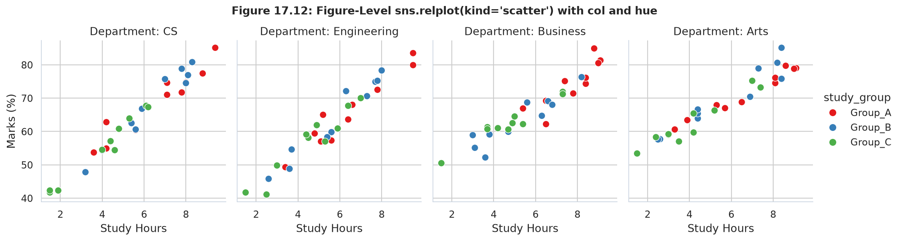
sns.relplot(kind="scatter", col="department") mapping study hours to marks with automated cohort hues.
Agar data sequential ya time-series nature ka ho, toh simply kind="line" pass karein:
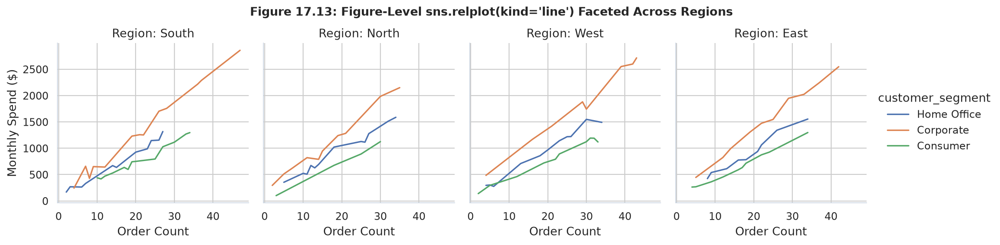
sns.relplot(kind="line", col="region") showing spend trajectory across order frequencies.sns.displot() for Distribution Multi-Panel Visuals
Jab aapko multiple groups ke underlying statistical distributions (skewness, modality, tails) compare karne hon, toh sns.displot() standard FacetGrid + map(sns.histplot) se 10x zyada convenient hai:
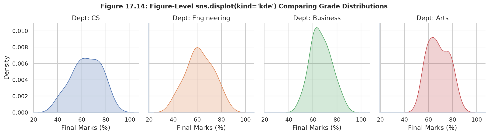
sns.displot(kind="kde", col="endpoint", col_wrap=2) showing kernel density estimates of latency distributions.sns.catplot() for Categorical Aggregations
Categorical data visualization (boxplots, violins, point plots, bar plots) ke liye sns.catplot() ultimate Swiss Army knife hai:
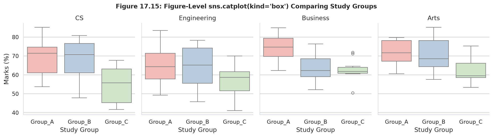
sns.catplot(kind="box", col="region", x="customer_segment", y="spend_usd") comparing median customer spending.
Always use Figure-Level functions (relplot, displot, catplot) first!
Kyunki yeh cleaner hain, 1 line me execute hote hain, aur inme standard figure-level conveniences built-in hain.
Switch to raw FacetGrid ONLY when:
(1) Aapko multiple unrelated plotting layers add karni hon (jaise panel 1 par scatter + panel 2 par custom KDE + panel 3 par threshold line),
ya (2) Aap native Matplotlib function (plt.scatter, plt.fill_between) map karna chahte hon.
relplot() Scatter Multi-Panelimport seaborn as sns
import matplotlib.pyplot as plt
import pandas as pd
df = pd.read_csv("scratch/seaborn_topic17_data/student_academic_dataset.csv")
# Single-line figure-level faceting
g = sns.relplot(
data=df,
x="study_hours",
y="marks",
col="department",
hue="study_group",
kind="scatter",
palette="viridis",
height=3.2,
aspect=1.0,
s=70
)
g.set_axis_labels("Study Hours", "Marks (%)")
plt.show()relplot() Line Plot with Region Facetingimport seaborn as sns
import matplotlib.pyplot as plt
import pandas as pd
ecom_df = pd.read_csv("scratch/seaborn_topic17_data/ecommerce_regional_dataset.csv")
g = sns.relplot(
data=ecom_df,
x="order_count",
y="spend_usd",
col="region",
hue="customer_segment",
kind="line",
errorbar=None,
marker="o",
height=3.2,
aspect=1.1
)
g.set_axis_labels("Number of Orders", "Total Spend ($)")
plt.show()displot() Kernel Density Across Facetsimport seaborn as sns
import matplotlib.pyplot as plt
import pandas as pd
api_df = pd.read_csv("scratch/seaborn_topic17_data/api_telemetry_dataset.csv")
# Multi-panel KDE with column wrapping
g = sns.displot(
data=api_df,
x="response_latency_ms",
col="endpoint",
col_wrap=2,
kind="kde",
fill=True,
height=3.0,
aspect=1.2,
color="#0D9488"
)
g.set_axis_labels("Latency (ms)", "Density")
plt.show()displot() Histogram with Rug Marksimport seaborn as sns
import matplotlib.pyplot as plt
import pandas as pd
df = pd.read_csv("scratch/seaborn_topic17_data/student_academic_dataset.csv")
g = sns.displot(
data=df,
x="marks",
col="department",
kind="hist",
bins=10,
kde=True,
rug=True,
height=3.0,
aspect=1.1,
color="#4F46E5"
)
g.set_axis_labels("Final Marks (%)", "Student Count")
plt.show()catplot() Boxplot across Regional Facetsimport seaborn as sns
import matplotlib.pyplot as plt
import pandas as pd
ecom_df = pd.read_csv("scratch/seaborn_topic17_data/ecommerce_regional_dataset.csv")
g = sns.catplot(
data=ecom_df,
x="customer_segment",
y="spend_usd",
col="region",
kind="box",
palette="Blues",
hue="customer_segment",
legend=False,
height=3.5,
aspect=0.9
)
g.set_axis_labels("Customer Segment", "Spend ($)")
g.set_xticklabels(rotation=25)
plt.show()catplot() Barplot Aggregation across Endpointsimport seaborn as sns
import matplotlib.pyplot as plt
import pandas as pd
api_df = pd.read_csv("scratch/seaborn_topic17_data/api_telemetry_dataset.csv")
g = sns.catplot(
data=api_df,
x="traffic_level",
y="response_latency_ms",
col="endpoint",
kind="bar",
errorbar="se",
palette="coolwarm",
hue="traffic_level",
legend=False,
height=3.2,
aspect=1.0
)
g.set_axis_labels("Traffic Level", "Mean Latency (ms)")
plt.show()Imagine karein aap ek major university ke Chief Academic Analytics Officer hain. Aapke samne ek complex problem statement hai: "Kya daily study hours sabhi departments me marks ko equally boost karte hain? Aur kya rigorous study groups (Group A) arts students ke liye utne hi beneficial hain jitne engineering students ke liye?"
Single aggregated scatter plot dekhne par hume sirf overall trend (overall r = 0.9252) dikhta hai. Lekin multi-plot faceting ke through hum departmental nuances ko isolate kar sakte hain.
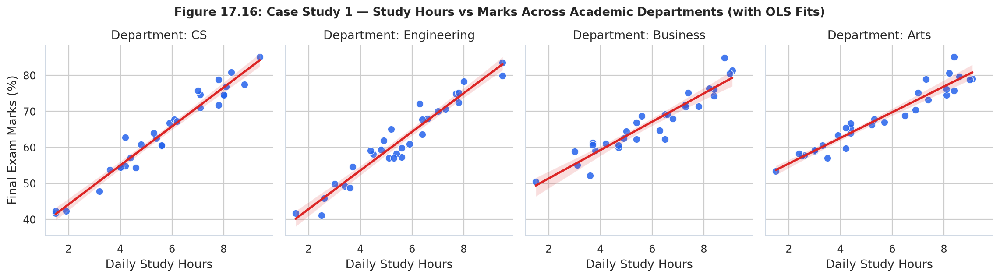
| Department | Student Sample (N) | Mean Final Score (%) | Study Hours vs Marks Correlation (r) | Key Academic Insight |
|---|---|---|---|---|
| Computer Science | 30 | 63.90% | 0.9774 | Highest linear predictability; direct code practice yields proportional grades. |
| Engineering | 30 | 62.04% | 0.9670 | Steep learning curve; students with < 4 hours/day face elevated failure risk. |
| Business School | 30 | 66.68% | 0.9435 | Moderate variance; presentation and case study teamwork balance exam scores. |
| Liberal Arts | 30 | 68.15% | 0.9614 | Highest baseline score (68.15%); reading hours strongly enhance essay quality. |
Ab hum next level deeper jate hain. Hum check karna chahte hain ki har department ke andar Study Group A (Intensive, mean 6.87 hrs/day), Group B (Standard, mean 5.76 hrs/day), aur Group C (Self-Paced, mean 4.37 hrs/day) ka performance distribution kaisa hai:
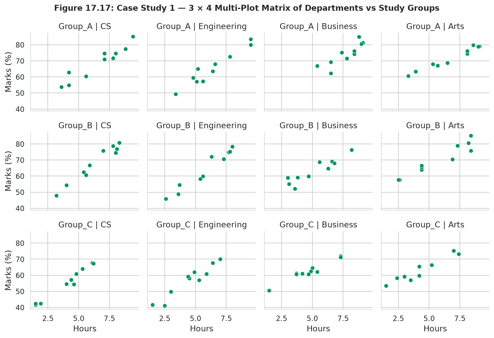
import seaborn as sns
import matplotlib.pyplot as plt
import pandas as pd
# Load verified dataset (120 student records)
df = pd.read_csv("scratch/seaborn_topic17_data/student_academic_dataset.csv")
# 1. Setup FacetGrid with 4 columns
g = sns.FacetGrid(df, col="department", height=3.5, aspect=0.95, sharex=True, sharey=True)
# 2. Map scatterplot with study_group hues
g.map_dataframe(sns.scatterplot, x="study_hours", y="marks", hue="study_group", palette="Dark2", s=55, alpha=0.9)
# 3. Overlay regression trendline
g.map_dataframe(sns.regplot, x="study_hours", y="marks", scatter=False, color="#DC2626", line_kws={"linewidth": 1.8})
# 4. Polish labels and legend
g.set_axis_labels("Daily Study Hours", "Final Marks (%)")
g.set_titles(template="Faculty: {col_name}", weight="bold")
g.add_legend(title="Study Cohort")
plt.show()import seaborn as sns
import matplotlib.pyplot as plt
import pandas as pd
df = pd.read_csv("scratch/seaborn_topic17_data/student_academic_dataset.csv")
# 3 rows x 4 columns = 12 subplots
g = sns.FacetGrid(
df,
row="study_group",
col="department",
margin_titles=True,
height=2.4,
aspect=1.1
)
g.map(sns.histplot, "marks", kde=True, color="#2563EB", bins=7)
g.set_axis_labels("Marks (%)", "Student Count")
g.fig.subplots_adjust(top=0.92)
g.fig.suptitle("Marks Distribution across 12 Departmental-Cohort Cells", fontsize=13, weight="bold")
plt.show()E-commerce business me sales data ko geographic region aur customer tier ke across compare karna critical decision-making point hota hai. Yahan hum 150 customer enterprise transactions analyze kar rahe hain jisme 4 geographic regions (North, South, East, West) aur 3 segments (Consumer, Corporate, Home Office) shamil hain.
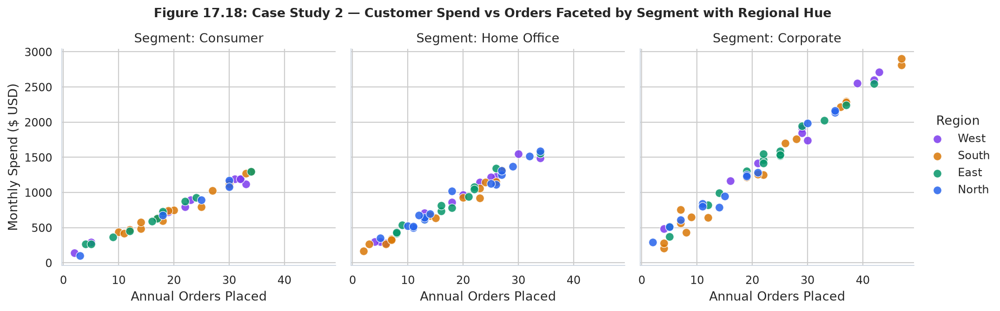
Data confirms strong purchase scaling: Order count aur Total spend me global correlation r = 0.9053 hai. Notice karein:
Customer segment spending disparity ko visual confidence intervals ke sath dekhne ke liye categorical multi-panel bar plot create kiya gaya:
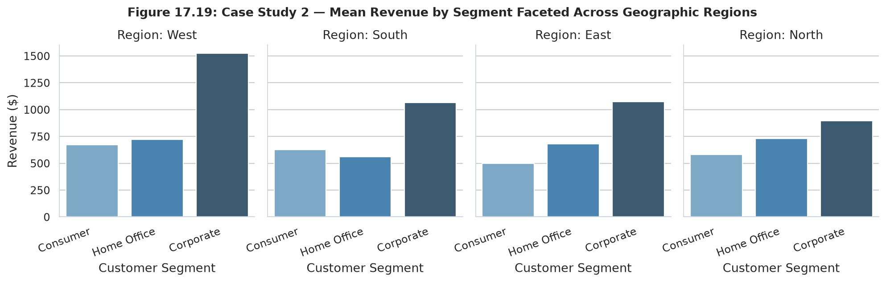
catplot(kind="bar")) proving that Corporate accounts consistently lead spending in every single geographical zone.import seaborn as sns
import matplotlib.pyplot as plt
import pandas as pd
ecom_df = pd.read_csv("scratch/seaborn_topic17_data/ecommerce_regional_dataset.csv")
# Figure-level faceting across regions
g = sns.relplot(
data=ecom_df,
x="order_count",
y="spend_usd",
col="region",
hue="customer_segment",
style="customer_segment",
palette="deep",
s=75,
height=3.4,
aspect=1.05
)
g.set_axis_labels("Total Orders", "Total Spend (USD)")
g.set_titles("Territory: {col_name}", weight="bold")
plt.show()import seaborn as sns
import matplotlib.pyplot as plt
import pandas as pd
ecom_df = pd.read_csv("scratch/seaborn_topic17_data/ecommerce_regional_dataset.csv")
g = sns.catplot(
data=ecom_df,
x="customer_segment",
y="spend_usd",
col="region",
kind="bar",
errorbar="se",
palette="Set2",
hue="customer_segment",
legend=False,
height=3.2,
aspect=0.9
)
g.set_axis_labels("Customer Tier", "Mean Spend ($)")
g.set_xticklabels(rotation=20)
g.despine(left=True)
plt.show()
Modern cloud engineering me Site Reliability Engineering (SRE) teams ko hazaron microservices ka health monitor karna hota hai.
Is scenario me humare paas 120 hourly snapshots hain across 4 key endpoints:
/auth/login, /api/search, /checkout/pay, aur /user/profile under Low, Normal, aur Peak load conditions.
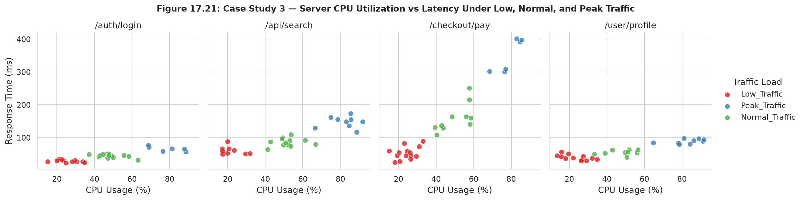
| Microservice Route | Mean Latency (ms) | Observed Max Spike (ms) | SRE Health Diagnosis | Action Required |
|---|---|---|---|---|
/auth/login |
42.62 ms | 58.2 ms | Ultra-healthy; in-memory JWT cache prevents database bottleneck. | None; optimal performance. |
/user/profile |
59.04 ms | 84.1 ms | Healthy; Redis caching absorbs 95% of profile reads. | Routine monitoring. |
/api/search |
96.82 ms | 162.4 ms | Elevated; Elasticsearch cluster CPU surges during Peak queries. | Add read replicas to search cluster. |
/checkout/pay |
148.01 ms | 401.5 ms | Severe Bottleneck! Heavy tail latency caused by 3rd-party payment gateways. | Implement async queue & circuit breakers. |
Kyunki /checkout/pay ki latency 400ms tak pahunchti hai jabki /auth/login 60ms ke andar rehti hai, isliye distribution plot me col_wrap=2 aur independent density scales use kiye gaye:
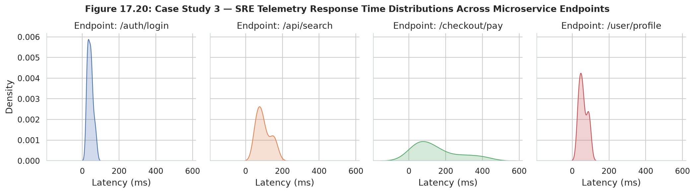
sns.displot(kind="kde", col_wrap=2) revealing the long right-tail degradation in the checkout payment pipeline.import seaborn as sns
import matplotlib.pyplot as plt
import pandas as pd
api_df = pd.read_csv("scratch/seaborn_topic17_data/api_telemetry_dataset.csv")
g = sns.FacetGrid(
api_df,
col="endpoint",
hue="traffic_level",
palette={"Low": "#10B981", "Normal": "#3B82F6", "Peak": "#EF4444"},
height=3.4,
aspect=1.05
)
g.map_dataframe(sns.scatterplot, x="cpu_utilization_pct", y="response_latency_ms", s=65, alpha=0.85)
g.add_legend(title="Server Load")
g.set_axis_labels("Host CPU Load (%)", "Response Time (ms)")
plt.show()import seaborn as sns
import matplotlib.pyplot as plt
import pandas as pd
api_df = pd.read_csv("scratch/seaborn_topic17_data/api_telemetry_dataset.csv")
# Displot with 2x2 grid wrapping
g = sns.displot(
data=api_df,
x="response_latency_ms",
col="endpoint",
col_wrap=2,
kind="kde",
fill=True,
height=3.0,
aspect=1.25,
color="#D97706"
)
g.set_axis_labels("Latency (ms)", "Empirical Density")
g.set_titles(template="Route: {col_name}", weight="bold")
plt.show()
Python data visualization ecosystem me multiple multi-plot tools available hain: FacetGrid, sns.relplot(), sns.displot(), sns.catplot(), sns.PairGrid (Topic 15), aur native Matplotlib ka plt.subplots().
Students aksar confuse hote hain ki "Konsa tool kab use karna chahiye?"
| Tool / Function | Object Returned | Primary Chart Types | Data Format Required | Legend & Titles | Best Used When... |
|---|---|---|---|---|---|
sns.FacetGrid |
FacetGrid |
Any Matplotlib or custom Python plotting function | Tidy / Long-form DataFrame | Manual (g.add_legend(), g.set_titles()) |
Custom hybrid plots banani hon (e.g. overlaying custom regression models or KDE over scatter). |
sns.relplot() |
FacetGrid |
Scatter, Line | Tidy / Long-form DataFrame | Automatic (external margin legend) | Two continuous variables ka relationship across categories visualize karna ho (zero boilerplate). |
sns.displot() |
FacetGrid |
Hist, KDE, ECDF, Rug | Tidy / Long-form DataFrame | Automatic (shared bins & density) | Subgroups ke statistical distributions aur spread compare karne hon. |
sns.catplot() |
FacetGrid |
Box, Violin, Bar, Strip, Swarm, Point, Count | Tidy / Long-form DataFrame | Automatic | Categorical summaries, medians, aur quartiles across dimensions compare karne hon. |
sns.PairGrid |
PairGrid |
Pairwise scatter, histograms, KDE matrix | Numeric columns of DataFrame | Diagonal / Off-diagonal split | All pairs of numeric variables ka pairwise interaction dekhna ho (Topic 15). |
plt.subplots() |
(Figure, ndarray of Axes) |
Arbitrary Matplotlib primitives | Any Python list, NumPy array, or Series | Fully Manual | Heterogeneous dashboard banani ho jahan panel 1 pie chart ho, panel 2 line chart ho, aur panel 3 3D surface ho. |
| Aspect | FacetGrid | PairGrid (Topic 15) |
|---|---|---|
| Core Splitting Logic | Same variables plotted across different categorical subsets (e.g., Study Hours vs Marks for CS, Eng, Arts). | Different numeric variables plotted against each other pairwise (e.g., Hours vs Marks, Hours vs Attendance, Marks vs Attendance). |
| Grid Dimensions | Number of rows/cols depends on categorical levels (e.g., 3 Groups × 4 Departments = 12 panels). | Square matrix of size N × N where N is the number of numerical columns. |
| Diagonal Treatment | All panels contain the same plot type. | Diagonals typically show univariate distributions (histplot), off-diagonals show bivariate relationships (scatterplot). |
Rule 1: Agar aap standard scatter, line, distribution, ya boxplot bana rahe hain → Use figure-level wrappers (relplot, displot, catplot). Yeh aapke 10 lines of code ko 1 line me shrink kar dete hain.
Rule 2: Agar aapko multiple custom plot types ek hi panel me layer karni hain ya non-Seaborn plotting call karni hai → Use raw FacetGrid.
Rule 3: Agar aapko har panel me completely different geometry chahiye (e.g. Panel 1: Gauge chart, Panel 2: Table, Panel 3: Area chart) → Use Matplotlib plt.subplots().
Jab students FacetGrid aur multi-plot workflows implement karte hain, toh kuch subtle syntax errors, layout collisions, aur visual anti-patterns frequently occur karte hain. Neeche 14 critical pitfalls aur unke exact code-level solutions diye gaye hain:
| # | Common Mistake / Antipattern | Root Cause | The Exact Fix |
|---|---|---|---|
| 1 | Using col_wrap together with row |
ValueError: Cannot use `row` and `col_wrap` together. Wrapping applies only to 1D column arrays. |
Omit row when using col_wrap, or use row + col for a fixed 2D matrix. |
| 2 | Calling g.map() with keyword-only arguments |
g.map() passes columns positionally: func(df[col1], df[col2]). |
Use g.map_dataframe() instead, which passes named kwargs (x=..., y=...). |
| 3 | Overriding figure size via plt.figure(figsize=(12, 6)) |
FacetGrid internally instantiates its own plt.figure(), ignoring previous figure calls. |
Configure height and aspect parameters directly in FacetGrid(height=3.5, aspect=1.2). |
| 4 | Using deprecated ci=None parameter |
Seaborn 0.13+ has replaced ci with errorbar=None. |
Use errorbar=None in catplot, relplot, and barplot. |
| 5 | Passing palette without assigning hue |
Triggers FutureWarning: Passing `palette` without assigning `hue` is deprecated. |
Assign hue="column_name" and set legend=False if a legend is not needed. |
| 6 | Passing wide-form (unmelted) DataFrame | FacetGrid requires categorical columns to partition data subsets. | Use pd.melt(df, id_vars=[...]) to convert wide data to tidy long-form before plotting. |
| 7 | High-cardinality category explosion (e.g., 50 States) | FacetGrid tries to render 50 separate axes, crashing memory and producing microscopic plots. | Filter top categories with df[df['col'].isin(top_k)] or aggregate small groups into "Other". |
| 8 | Misleading comparison with unshared axes | Setting sharey=False causes subplots with small variations to visually look identical to large ones. |
Keep sharey=True unless category scales differ by orders of magnitude (e.g. 10x+ difference). |
| 9 | Missing margin_titles=True on 2D grids |
Default headers print full title "group = A | dept = CS" in every cell, cluttering the view. | Set margin_titles=True so row names appear only on the far right and col names on top. |
| 10 | Suptitle overlapping facet titles | g.fig.suptitle() collides with top row headers. |
Call g.fig.subplots_adjust(top=0.90) before adding the suptitle. |
| 11 | Legend cut off on exported images | Figure bounding box excludes external legend placed by g.add_legend(). |
Use plt.savefig('output.png', bbox_inches='tight') to capture the external legend. |
| 12 | Annotating single panel instead of all subplots | Calling plt.axhline() applies only to the last active axis. |
Loop through all axes: for ax in g.axes.flat: ax.axhline(...). |
| 13 | Categorical sorting disorder | Categories appear in arbitrary order of first appearance in data. | Specify explicit ordering using col_order=['CS', 'Engineering', 'Business', 'Arts']. |
| 14 | Unwanted scientific notation on axes ticks | Matplotlib automatically adds 1e6 multiplier on large financial values. |
Format ticks with matplotlib.ticker.FuncFormatter(lambda x, p: f'${{x*1e-3:.0f}}k'). |
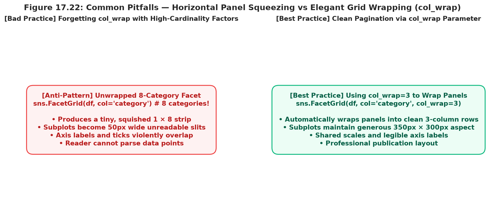
import seaborn as sns
import matplotlib.pyplot as plt
import pandas as pd
df = pd.read_csv("scratch/seaborn_topic17_data/student_academic_dataset.csv")
# ---------------------------------------------
# BAD CODE: Calling plt.axhline() after FacetGrid
# ---------------------------------------------
# g = sns.FacetGrid(df, col="department")
# g.map(sns.scatterplot, "study_hours", "marks")
# plt.axhline(50, color="red") # BUG: Only adds line to the LAST axis (Arts)!
# ---------------------------------------------
# GOOD CODE: Iterating over g.axes.flat
# ---------------------------------------------
g = sns.FacetGrid(df, col="department", height=3.2, aspect=1.0)
g.map_dataframe(sns.scatterplot, x="study_hours", y="marks", color="#2563EB", s=50)
# Apply baseline benchmark threshold to EVERY facet panel
for ax in g.axes.flat:
ax.axhline(50, color="#DC2626", linestyle="--", linewidth=1.5, alpha=0.8, label="Pass Mark (50%)")
ax.set_ylim(20, 100)
g.set_axis_labels("Study Hours", "Marks (%)")
g.fig.subplots_adjust(top=0.88)
g.fig.suptitle("Passing Threshold Benchmark across Faculties", weight="bold")
plt.show()import seaborn as sns
import matplotlib.pyplot as plt
import pandas as pd
ecom_df = pd.read_csv("scratch/seaborn_topic17_data/ecommerce_regional_dataset.csv")
# Specify explicit geographic order and wrap into 2x2 grid
territory_order = ["North", "South", "East", "West"]
g = sns.FacetGrid(
ecom_df,
col="region",
col_order=territory_order,
col_wrap=2,
height=3.0,
aspect=1.2
)
g.map_dataframe(
sns.scatterplot,
x="order_count",
y="spend_usd",
hue="customer_segment",
palette="Dark2",
s=60
)
# Custom title template and margins
g.set_titles(template="Territory: {{col_name}}", weight="bold", size=10)
g.set_axis_labels("Completed Orders", "Total Spend (USD)")
g.add_legend(title="Segment")
g.despine()
plt.show()Ab waqt hai practical coding practice ka! Neeche diye gaye 7 realistic challenges ko solve karke dekhein. Pehle khud try karein, aur jab verify karna ho toh click karke solution aur output explanation reveal karein.
Problem: student_academic_dataset.csv load karein aur ek 4-column FacetGrid banayein (har department ka ek column). Har panel me student ke final marks ka histogram (8 bins) plot karein using plt.hist.
import seaborn as sns
import matplotlib.pyplot as plt
import pandas as pd
df = pd.read_csv("scratch/seaborn_topic17_data/student_academic_dataset.csv")
g = sns.FacetGrid(df, col="department", height=3.2, aspect=1.0)
g.map(plt.hist, "marks", bins=8, color="#0284C7", edgecolor="white")
g.set_axis_labels("Final Marks (%)", "Frequency")
g.set_titles(template="Dept: {col_name}", weight="bold")
plt.show()Problem: Create a 3 × 4 Matrix Grid where rows are study_group and columns are department. Use map_dataframe with sns.regplot to show study hours vs marks with pass-fail threshold lines.
import seaborn as sns
import matplotlib.pyplot as plt
import pandas as pd
df = pd.read_csv("scratch/seaborn_topic17_data/student_academic_dataset.csv")
g = sns.FacetGrid(df, row="study_group", col="department", margin_titles=True, height=2.5, aspect=1.1)
g.map_dataframe(sns.regplot, x="study_hours", y="marks", color="#4F46E5", scatter_kws={"alpha": 0.7, "s": 30})
g.set_axis_labels("Hours / Day", "Score (%)")
plt.show()sns.relplot()
Problem: Rewrite a 5-line FacetGrid + scatter + legend script into a concise, single-line sns.relplot() call analyzing regional e-commerce spend.
import seaborn as sns
import matplotlib.pyplot as plt
import pandas as pd
ecom_df = pd.read_csv("scratch/seaborn_topic17_data/ecommerce_regional_dataset.csv")
# 1-Line high-level figure command
g = sns.relplot(
data=ecom_df, x="order_count", y="spend_usd", col="region",
hue="customer_segment", kind="scatter", s=60, height=3.2, aspect=1.1
)
plt.show()col_wrap=2
Problem: Use sns.catplot() to visualize spend across 4 geographic regions wrapped into a 2 × 2 grid using boxplots.
import seaborn as sns
import matplotlib.pyplot as plt
import pandas as pd
ecom_df = pd.read_csv("scratch/seaborn_topic17_data/ecommerce_regional_dataset.csv")
g = sns.catplot(
data=ecom_df, x="customer_segment", y="spend_usd", col="region",
col_wrap=2, kind="box", palette="Pastel1", hue="customer_segment",
legend=False, height=3.0, aspect=1.2
)
g.set_axis_labels("Customer Tier", "Total Spend (USD)")
plt.show()sharey=False)
Problem: Create a multi-panel density plot on server telemetry where sharey=False so that endpoints with low variance are not flattened by high-variance ones.
import seaborn as sns
import matplotlib.pyplot as plt
import pandas as pd
api_df = pd.read_csv("scratch/seaborn_topic17_data/api_telemetry_dataset.csv")
g = sns.FacetGrid(api_df, col="endpoint", col_wrap=2, sharey=False, height=3.0, aspect=1.2)
g.map(sns.kdeplot, "response_latency_ms", fill=True, color="#059669")
g.set_axis_labels("Latency (ms)", "Relative Density")
plt.show()g.axes.flat for Target Lines
Problem: Iterate through all axes of a FacetGrid to draw a horizontal Service Level Objective (SLO) latency threshold at 100ms with a red dashed line.
import seaborn as sns
import matplotlib.pyplot as plt
import pandas as pd
api_df = pd.read_csv("scratch/seaborn_topic17_data/api_telemetry_dataset.csv")
g = sns.FacetGrid(api_df, col="endpoint", height=3.2, aspect=1.0)
g.map_dataframe(sns.scatterplot, x="cpu_utilization_pct", y="response_latency_ms", color="#3B82F6")
# Iterate over each axis to draw the threshold
for ax in g.axes.flat:
ax.axhline(100, color="#EF4444", linestyle="--", linewidth=1.5, label="100ms SLO")
g.fig.subplots_adjust(top=0.88)
g.fig.suptitle("API Endpoints Latency vs 100ms SLO Target", weight="bold")
plt.show()Problem: Layer a 2D density contour (sns.kdeplot) beneath a scatterplot (sns.scatterplot) across all 4 department facets.
import seaborn as sns
import matplotlib.pyplot as plt
import pandas as pd
df = pd.read_csv("scratch/seaborn_topic17_data/student_academic_dataset.csv")
g = sns.FacetGrid(df, col="department", height=3.5, aspect=1.0)
# Layer 1: Density contour background
g.map_dataframe(sns.kdeplot, x="study_hours", y="marks", levels=5, color="#94A3B8", alpha=0.5)
# Layer 2: Individual student points
g.map_dataframe(sns.scatterplot, x="study_hours", y="marks", color="#1E3A8A", s=45)
g.set_axis_labels("Study Hours", "Marks (%)")
plt.show()import seaborn as sns
import matplotlib.pyplot as plt
import pandas as pd
df = pd.read_csv("scratch/seaborn_topic17_data/student_academic_dataset.csv")
g = sns.relplot(
data=df,
x="study_hours",
y="marks",
col="department",
col_wrap=2,
hue="study_group",
palette="Set2",
height=3.0,
aspect=1.2
)
g.set_titles("Department: {col_name}", weight="bold")
g.fig.subplots_adjust(top=0.90)
g.fig.suptitle("Departmental Academic Performance Matrix", weight="bold")
# Export high-res graphic with tight bounding box
g.savefig("student_performance_faceted.png", dpi=300, bbox_inches="tight")
print("Exported faceted analysis successfully!")import seaborn as sns
import matplotlib.pyplot as plt
import pandas as pd
api_df = pd.read_csv("scratch/seaborn_topic17_data/api_telemetry_dataset.csv")
g = sns.FacetGrid(api_df, col="endpoint", col_wrap=2, height=3.0, aspect=1.2)
g.map_dataframe(
sns.scatterplot,
x="requests_per_second",
y="response_latency_ms",
hue="cpu_utilization_pct",
palette="rocket_r",
s=65
)
g.add_legend(title="CPU Load (%)")
g.set_axis_labels("Requests / Sec", "Latency (ms)")
plt.show()import seaborn as sns
import matplotlib.pyplot as plt
import pandas as pd
ecom_df = pd.read_csv("scratch/seaborn_topic17_data/ecommerce_regional_dataset.csv")
g = sns.relplot(
data=ecom_df,
x="order_count",
y="spend_usd",
col="region",
hue="customer_segment",
height=3.2,
aspect=1.05
)
# Custom editorial theme polishing
for ax in g.axes.flat:
ax.grid(True, linestyle=":", alpha=0.6, color="#CBD5E1")
ax.set_facecolor("#F8FAFC")
g.despine(top=True, right=True, left=False, bottom=False)
plt.show()Congratulations! Aapne Seaborn ke sabse powerful visual decomposition tool — FacetGrid & Multi-Plot Analysis — par master kar liya hai. Is quick revision section me architectural decision workflow, complete parameter cheat sheet, aur self-evaluation checklist provide ki gayi hai.
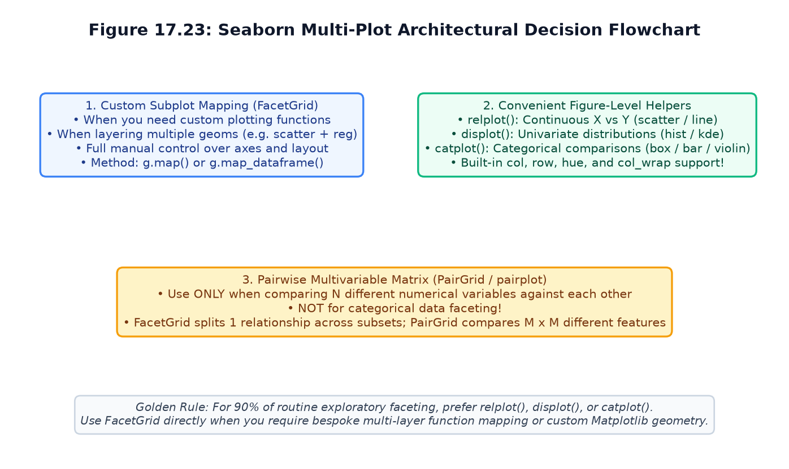
relplot(), displot(), catplot(), FacetGrid, PairGrid, and plt.subplots().| Parameter | Supported In | Data Type / Values | Practical Utility |
|---|---|---|---|
data |
All functions | pandas DataFrame | Input dataset (must be tidy long-form format). |
col |
FacetGrid, relplot, displot, catplot | String (Column name) | Horizontal panel partitioning across categories. |
row |
FacetGrid, relplot, displot, catplot | String (Column name) | Vertical panel partitioning (creates 2D matrix when paired with col). |
hue |
All functions | String (Column name) | Color mapping within each panel; preserves spatial coordinates. |
col_wrap |
All functions | Integer (> 0) | Wraps horizontal column faceting across multiple rows (cannot be used with row). |
height |
All functions | Float (Inches) | Vertical height of each individual subplot. |
aspect |
All functions | Float (Width / Height) | Controls aspect ratio of each facet. Individual width = height * aspect. |
sharex, sharey |
FacetGrid, relplot, catplot | Boolean or "col", "row" |
Enforces global axis limits across panels (default True). |
margin_titles |
FacetGrid | Boolean (default False) |
When True on 2D grids, places row titles only on the far-right margin. |
palette |
All functions | String, dict, or list | Color mapping scheme applied across categories. |
despine |
FacetGrid | Boolean (default True) |
Removes top and right axis spines for clean visual polish. |
col_order, row_order |
All functions | List of Strings | Explicit custom ordering of categorical levels across panels. |
| Status | Core Concept / Skill Objective | Self-Check Verification |
|---|---|---|
| ☐ | Cartesian Decomposition | Main samajhta hoon ki Small Multiples kaise overlapping overplotting ko eliminate karte hain. |
| ☐ | FacetGrid 2-Step Workflow | Pehle sns.FacetGrid(df, col=...) initialize karna aur phir g.map_dataframe() se plot draw karna. |
| ☐ | map() vs map_dataframe() | Main janta hoon ki map() positional columns leta hai jabki map_dataframe() kwargs pass karta hai. |
| ☐ | Multi-Dimensional Grid (Row + Col) | Main row aur col combine karke 2D subplots matrix create kar sakta hoon. |
| ☐ | Subplot Geometry Sizing | Main janta hoon ki height aur aspect har subplot par apply hote hain, pure figure par nahi. |
| ☐ | Column Wrapping | Main col_wrap=K use karke long single-row grids ko multi-row layout me wrap kar sakta hoon. |
| ☐ | Axis Independence (sharey) | Main janta hoon ki kab sharey=False karna zaroori hota hai aur kab shared scale fair comparison deta hai. |
| ☐ | Figure-Level Helpers | Main sns.relplot(), sns.displot(), aur sns.catplot() se 1-line faceted plots bana sakta hoon. |
| ☐ | Iterating over g.axes.flat | Main sabhi subplots me threshold lines ya annotations loop ke zariye apply kar sakta hoon. |
| ☐ | FacetGrid vs PairGrid Distinction | Main clearly explain kar sakta hoon ki FacetGrid same variables across groups dikhata hai, PairGrid different variables pairwise. |
Agli class me hum study karenge: Seaborn Topic 18: Aesthetics, Themes & Palette Customization!
Wahan hum sikhenge:
darkgrid, whitegrid, dark, white, aur ticks.paper, notebook, talk, aur poster via sns.set_context().color_palette(), hls, husl, cubehelix).